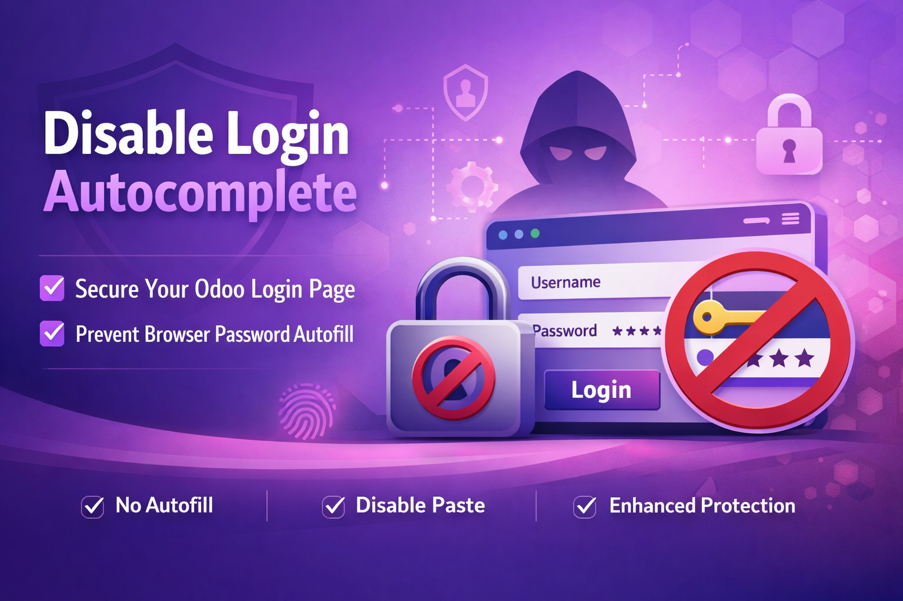
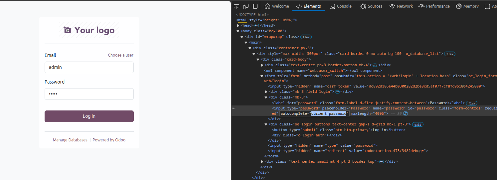
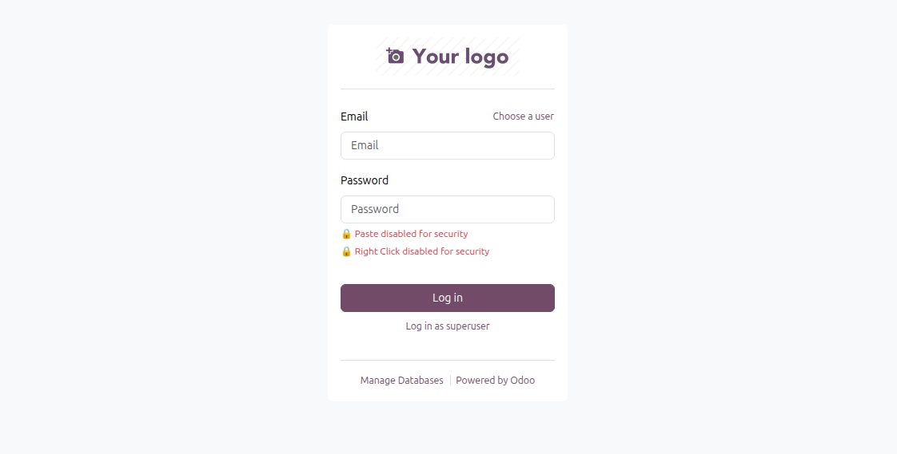

Improve login page security by disabling browser autofill, password paste, and right-click actions on the Odoo login screen.
This module enhances the security of the Odoo login page by preventing browsers and users from performing actions that may expose credentials.
The module modifies the login form behavior using a combination of XML view inheritance and frontend JavaScript.
These protections help reduce risks when Odoo is accessed from shared computers, public systems, or environments where credential safety is important.
The module inherits the default login template and adjusts the behavior of login fields.
The module updates login and password input fields to prevent browsers from automatically filling stored credentials.
autocomplete="off" autocomplete="new-password"
This reduces the chance of credentials being auto-filled by browser password managers.
JavaScript prevents users from pasting content into the password field.
This encourages manual password entry and prevents automated credential injection.
Right-click actions are disabled on the login page to restrict context menu operations such as copying or inspecting input fields.
This restriction only applies to the login page and does not affect the rest of the system after login.


addons directory
Deepak Verma
Company: Deecoders
Email: dpakverma789@gmail.com
LGPL-3